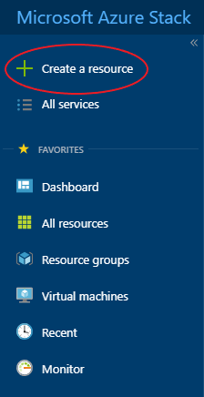
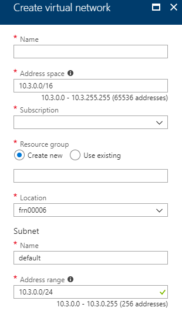
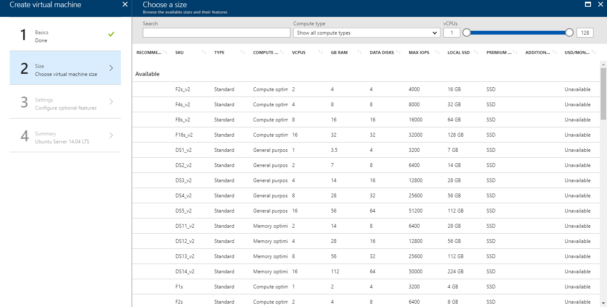

How to create a load balancer using the Azure Stack portal
Overview
A load balancer provides scale and availability by spreading incoming requests across multiple virtual machines within a load balancing pool. This guide shows you how to create a pool of back-end servers and a load balancer to spread traffic across them. In this example, the load balancer spreads traffic across two web servers.
Intended audience
To complete the steps in this guide, you must have appropriate access to a subscription in the UKCloud Azure Stack portal.
Creating a load balancer
In this section we will create a load balancer with a public IP address.
Log in to the UKCloud Azure Stack portal.
For more detailed instructions, see the Getting Started Guide for UKCloud for Microsoft Azure.
In the favourites panel, select Create a resource.

In the New blade, select Networking.

In the Featured section, select Load Balancer.

In the Create load balancer blade, enter the following information:
Name - The name of the load balancer.
Type - You can use internal load balancers to balance traffic from private IP addresses. Public load balancers can balance traffic originating from public IP addresses. For this example we will be creating a public load balancer.
Public IP Address - The public IP address that will be assigned to this load balancer. To create a new public IP address:
Click Public IP address on the Create load balancer blade.
Select Create new on the Choose public IP address blade.
Enter a name for the public IP address and click OK.
Subscription - This is your UKCloud for Microsoft Azure subscription and will be pre-populated by default.
Resource Group - Select an existing resource group, or create a new one by typing a name for your new resource group.
Location - This will be
frn00006, which is the location of the Azure Stack.
Click Create.
Create back-end servers
In this section we will create a virtual network and two virtual machines which exist on this network. This will form the back-end pool of the load balancer.
Create a virtual network
In the favourites panel, select Create a resource.
In the New blade, select Networking.
In the Featured section, select Virtual network.
In the Create virtual network blade, enter the following information:
Name - The name of the virtual network.
Address Space - The virtual network's address range in CIDR notation (for example, 192.168.1.0/16).
Subscription - This is your UKCloud for Microsoft Azure subscription and will be pre-populated by default.
Resource Group - Select an existing resource group, or create a new one by typing a name for your new resource group.
Location - This will be
frn00006, which is the location of the Azure Stack.Subnet Name - The name of the first subnet within the virtual network.
Address Range - The subnet's address range in CIDR notation (for example, 192.168.1.0/24). It must be contained by the address space of the virtual network. The address range of a subnet which is in use can't be edited.

Click Create.
Create the virtual machines
In the favourites panel, select Create a resource.
In the New blade, select Compute.

In the Compute blade, select the template that you want to use for your VM.

In the Create virtual machine blade, in the Basics step, enter general information about the VM, including a name, credentials and resource group, then click OK.

In the Size step, select the appropriate size for your VM, depending on its purpose, then click Select.
For information about the different available VM sizes, see https://docs.microsoft.com/en-gb/azure/azure-stack/user/azure-stack-vm-sizes.
Tip
By default, the list shows a selection of recommended VM sizes. To see all available VM sizes, click View all.

In the Settings step, change any of the optional settings as required for your VM, then click OK. Ensure that the virtual network created earlier is selected and that the VM belongs to an availability set. To create a new availability set:
Click Availability set on the Create virtual machine blade.
Select Create new on the Change availability set blade.
Enter a name for the availability set and the number of fault domains and update domains, then click OK.

In the Summary step, review the selections you've made and then click OK to start the deployment.
Create another VM, ensuring that the Availability set, Virtual network, Subnet and Network Security Group are the same.
Create network security group rules
In this section we will create NSG rules to allow inbound traffic.
Navigate to your network security group by clicking on All services in the favourites panel, then selecting Network security groups under the networking section.
Select the network security group your VMs are using from the list.
In the blade for your network security group, select Inbound security rules under the Settings section.
Click the +Add button.
In the Add inbound security rule blade, enter the following information:
Source - The source filter can be Any, an IP address range, or a default tag. It specifies the incoming traffic from a specific source IP address range that will be allowed or denied by this rule.
Source port range - Provide a single port, such as 80, or a port range, such as 1024-65535. This specifies from which ports traffic will be allowed or denied by this rule. Use an asterisk (*) to allow traffic on any port.
Destination - The destination filter can be Any, an IP address range, or a default tag. It specifies the outgoing traffic for a specific destination IP address range that will be allowed or denied by this rule.
Destination port range - Provide a single port, such as 80, or a port range, such as 1024-65535. This specifies from which ports traffic will be allowed or denied by this rule. Use an asterisk (*) to allow traffic on any port.
Protocol - Specify whether to allow inbound traffic using UDP, TCP or both.
Action - Choose whether the rule allows or denies the traffic specified.
Priority - Rules are processed in priority order; the lower the number, the higher the priority. We recommend leaving gaps between rules - 100, 200, 300, etc. - so that it's easier to add new rules without having to edit existing rules.
Name - The name of the security rule.
Description - A description of the security rule.

Click Add.
Create a back-end address pool
To spread traffic load across the VMs, you must create a back-end address pool. This pool contains the IP addresses of the VMs.
Navigate to your load balancer by clicking All services in the favourites panel, then selecting Load balancers under the networking section.
From the list, select the load balancer you created earlier.
In the blade for your load balancer, select Backend pools under the Settings section.
Click the +Add button.
In the Add backend pool blade, enter a name for the backend pool.
Select Availability set for the Associated to option, then select the availability set that you created in the previous section.
Click the + Add a target network IP configuration button, select the first VM you created in the previous section and select the network IP to be associated with the back-end pool.
Repeat step 7 for the second VM.

Click OK.
Create a health probe
When creating a load balancer, you can use a health probe to monitor the status of your application. In Azure Stack, the health probe adds and removes VMs from the load balancer back-end pool based on their current status.
Navigate to your load balancer by clicking All services in the favourites panel, then selecting Load balancers under the networking section.
From the list, select the load balancer you created earlier.
In the blade for your load balancer, select Health Probes under the Settings section.
Click the +Add button.
In the Add health probe blade, enter the following information:
Name - The name of your health probe.
Protocol - The protocol that the health probe uses to monitor the status of your VMs.
Port - The port that the health probe uses to monitor the status of your VMs.
Interval - The number of seconds between probe attempts.
Unhealthy threshold - The number of consecutive probe failures that must occur before a virtual machine is considered unhealthy and is removed from the pool.

Click OK.
Create a load balancing rule
A load balancer rule defines how traffic is distributed between VMs. The rule listens for traffic on a front-end IP address, then distributes it among the back-end pool.
Navigate to your load balancer by clicking on All services in the favourites panel, then selecting Load balancers under the networking section.
From the list, select the load balancer you created earlier.
In the blade for your load balancer, select Load balancing rules under the Settings section.
Click the +Add button.
In the Add load balancing rule blade, enter the following information:
Name - The name of your load balancing rule.
Frontend IP address - Clients communicating with this load balancer on the selected IP address and service will have their traffic routed to the target virtual machine by this NAT rule.
Protocol - The protocol that the rule redirects traffic for.
Port - The front-end port that the rule listens on.
Backend port - You can choose to route traffic to the virtual machines in the back-end pool using a different port than the one clients use to communicate with the load balancer.
Backend pool - The virtual machines in the selected back-end pool will be the target for the load-balanced traffic of this rule. Select the pool that you created in the previous section.
Health probe - The selected probe is used by this rule to determine which virtual machines in the back-end pool are healthy and can receive load-balanced traffic. Select the probe that you created in the previous section.
Session Persistence - Session persistence specifies that traffic from a client should be handled by the same virtual machine in the back-end pool for the duration of a session.
None specifies that successive requests from the same client may be handled by any virtual machine.
Client IP specifies that successive requests from the same client IP address will be handled by the same virtual machine.
Client IP and protocol specifies that successive requests from the same client IP address and protocol combination will be handled by the same virtual machine.
Idle timeout - Keep a TCP or HTTP connection open without relying on clients to send keep-alive messages.

Click OK.
Test the load balancer
After installing the application that is being load-balanced on each of the VMs, the load balancer is ready to test.
Navigate to your load balancer by clicking All services in the favourites panel, then selecting Load balancers under the networking section.
From the list, select the load balancer you created earlier.
Copy the Public IP address from the Overview section.
Test the connection to your application. For example, if the app is a web server, paste the public IP into the address bar of your browser. The home page of the web server should be displayed.
Feedback
If you have any comments on this document or any other aspect of your UKCloud experience, send them to products@ukcloud.com.